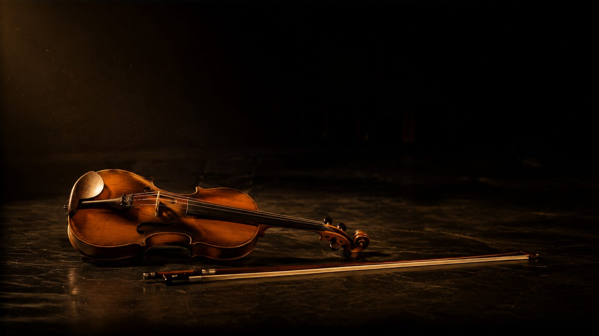
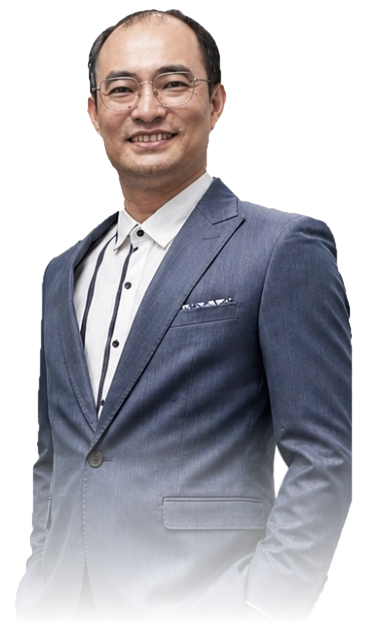
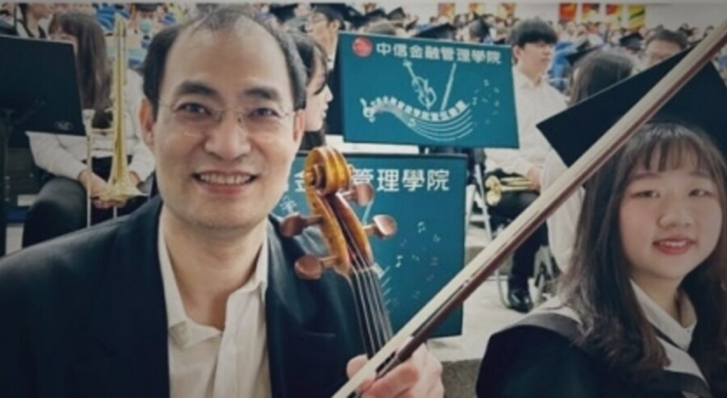
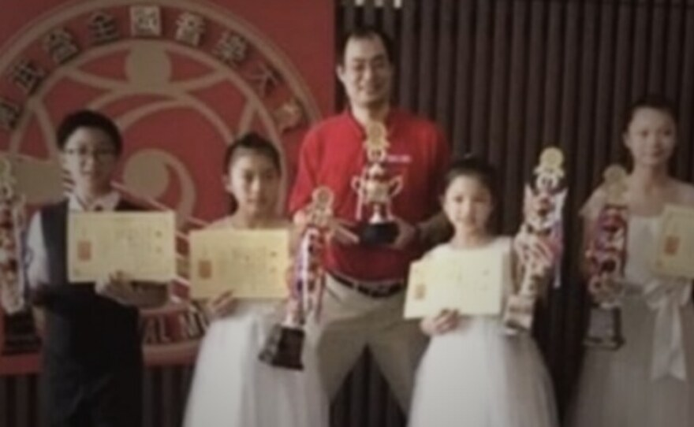

No. 01
樂團與室內樂的組建、訓練
學校弦樂團、機構常設樂團、青少年樂團、兒少室內樂團——從編制與選曲、分部訓練、到合奏與音樂會。二〇二〇年起他在博森國際外語藝術學院開設兒童少年室內樂團，也擔任大宸室內樂團指導教授，走的正是這條從零到台上的路。


III. Biografia Andante cantabile
他的訓練始於台灣，完成於美國西南部。在田納西大學（The University of Tennessee）取得音樂碩士之後，他於亞利桑那大學（University of Arizona）完成音樂藝術博士學位，二〇一三年。一路上教過他的老師，列在本頁第八樂章。
學位之外，真正養成他的是樂團裡的座位。二〇〇五到二〇〇七年，他在美國謝拉維斯塔交響樂團（Sierra Vista Symphony Orchestra）擔任協理首席。那個位置學的不只是拉好自己的分譜，而是怎麼讓一整個聲部呼吸一致——弓在哪裡起、句子在哪裡收、當指揮沒說話的時候，誰負責把話說完。
返台之後，他受邀擔任藝曲愛樂管弦樂團首席，從二〇一二年到二〇一九年，整整七年，樂團定期舉辦音樂會。七年是一段夠長的時間，長到足以看清一支樂團是怎麼被組起來的：人怎麼找、聲部怎麼分、曲目怎麼挑、排練的時間怎麼花才不浪費。
如今他把力氣放在台南——在中信金融管理學院任專任助理教授，同時擔任中信室內樂團／中信樂團師資、大宸室內樂團指導教授、龍門樂集青少年樂團（LSO）小提琴主修師資；二〇二〇年起，他在博森國際外語藝術學院開設「兒童少年室內樂團」，帶著孩子從第一次合奏開始練起。他也經常受邀擔任各大音樂比賽評審。
IV. Credo Largo, sotto voce
音樂不該是滿足家長虛榮心的產物，她應該是一個純粹的『美』。」
V. Repertorio Allegro con brio
以下是他長期在做、也願意接受洽談的工作。形式與規模可以談，但方向很一致：把一群人變成一個能一起演奏的整體。
No. 01
學校弦樂團、機構常設樂團、青少年樂團、兒少室內樂團——從編制與選曲、分部訓練、到合奏與音樂會。二〇二〇年起他在博森國際外語藝術學院開設兒童少年室內樂團，也擔任大宸室內樂團指導教授，走的正是這條從零到台上的路。

No. 02
從初學的音感與節奏，到主修程度的曲目與比賽準備。
「小提琴初學很難，要訓練好音感及節奏，準備期很長，這時就會需要孩子有良好的專注力。」 楊尚儒 — Bosen 專訪
No. 03 — 04
他經常受邀擔任各大音樂比賽評審，可就評分、曲目與訓練方向與主辦方交換意見。亦接受小提琴／中提琴的獨奏與室內樂演出邀約，以及面向教師、家長或學生的講座洽談。
檔期、酬勞與合作形式請直接洽談；聯絡方式見文末〈Coda〉。
VI. Allievi Allegretto grazioso
他希望教出獨立思考、願意把自己的音樂想法說出來的孩子——「自己去感受任何事物帶來的好與壞，沒有絕對的答案，不用怕出錯，不用怕踏出去。」名次不是目的，但它至少誠實地說明了訓練的密度。以下皆為公開資料。

龍門樂集青少年樂團另多次取得全國決賽參賽資格。
VII. Visione Maestoso
他的志向說得很直接：成立自己的樂團，並走上指揮台，成為一位指揮家。
對一個長年坐在首席位置上的人來說，這不是浪漫的轉行，而是把已經在做的事再往前一步。首席的工作本來就包含判斷句法、統一弓法、在排練裡替一整個聲部做決定；指揮只是把這個判斷的範圍，從弦樂擴大到整個編制。
而他想做的曲目，不只在西方傳統的範圍裡。在二〇二五年的一次訪談中，他談到東方樂器與西方編制的相遇——那不是一種點綴，而是他認為值得認真寫下去的方向。
「東西方的樂器各有長處……這樣的融合給我帶來很多未來可能創作上面的啟發。」
「中華傳統音樂是屬於我們的寶藏，這個部分可以開發成很好的一種音樂元素，特別在音樂創作上面。」
如果貴單位正在想這件事——學校要成立弦樂團、機構要辦一支常設樂團、地方要培養自己的青少年樂團，或是一場需要從無到有編制起來的音樂會——那麼這裡有一個人已經準備好從第一次排練站到台上。
第一場音樂會的曲目還沒定，團員名單也還空著。這兩件事，都可以一起決定。
VIII. Maestri Andante sostenuto
「我們應該傳承幾世紀以來的心靈活動——從音樂裡得到感動，讓音樂在孩子需要時可以療癒他，強壯他。」楊尚儒 — Bosen 專訪
Coda attacca
他同時是 BNI 大台南南區真鑽分會的成員；若你們在分會裡碰得到面，當面把需求說清楚，會比任何介紹信都快。目前對外公開的線上聯絡管道僅有 Facebook，電子信箱與電話待本人提供後補上，在此之前不列出任何未經確認的號碼或地址。